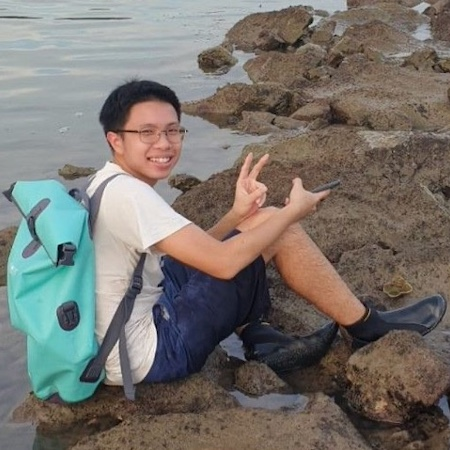

|  | NG Yu FeiHonours Student
Email: ng.yu_fei(AT)u.nus.edu |
Background
I am a Life Science undergraduate specializing in Ecology, Evolution, and Biodiversity. I am interested in species discovery via integrative taxonomy for all types of taxa such as macroalgae, and marine and terrestrial invertebrates. Recently, I have been studying wasp taxonomy in my free time.
Honours Project
I have worked on the integrative taxonomy of the green macroalgae Ulva and Gayralia in Singapore using molecular phylogenetic and morphological analysis for my UROPS. These studies improve our knowledge of macroalgal diversity in Singapore.
For my final year project, I am studying the diversity and distribution of intertidal macrophytes at Labrador Beach, Singapore as a follow-up to the 2004 Labrador survey. This would involve analyzing the temporal and spatial distribution of macroalgae and seagrasses of Labrador.